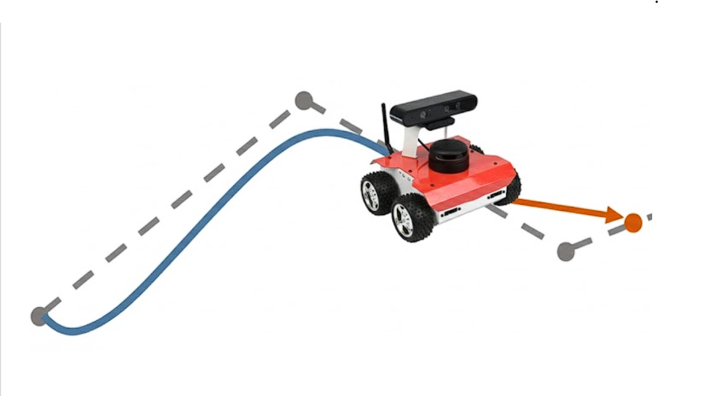

|
CPR Pure-Pursuit
Desarroyo del código
|

|
|
CPR Pure-Pursuit
Desarroyo del código
|
|
Bienvenido a la documentación técnica del sistema de navegación para robot móvil diferencial. Este proyecto implementa una solución completa en ROS 2 que permite a un robot seguir trayectorias complejas y suavizadas, con capacidad de reacción ante obstáculos imprevistos.
El sistema se divide en una arquitectura modular de dos nodos principales: un Generador de Rutas y un Controlador de Trayectoria.

El flujo de información funciona de la siguiente manera:
RoutePublisher selecciona una ruta (ej. zigzag, espiral, circuito) y genera una trayectoria suave./waypoints_path.PurePursuitNode recibe la ruta, calcula la velocidad necesaria y evita obstáculos si aparecen./waypoints_path ---> [PurePursuitNode] ---> /cmd_velEste nodo es el encargado de la "inteligencia global" de la ruta. No mueve el robot, solo le dice por dónde ir.
visualization_msgs::msg::MarkerArray) para ver la ruta y el objetivo en RViz.Este es el nodo que interactúa con los motores y sensores del robot. Implementa el algoritmo de seguimiento y una máquina de estados para la seguridad.
NORMAL: Seguimiento de ruta.STOPPED: Obstáculo detectado.SEARCHING: Giro sobre el propio eje para buscar espacio libre.| Tópico | Tipo de Mensaje | Dirección | Descripción |
|---|---|---|---|
/waypoints_path | geometry_msgs/msg/PoseArray | Pub -> Sub | Lista de puntos de la ruta suavizada. |
/goal_pose | geometry_msgs/msg/PoseStamped | Pub -> Sub | El objetivo final del segmento actual. |
/scan | sensor_msgs/msg/LaserScan | Sensor -> Sub | Datos del LIDAR para evasión. |
/cmd_vel | geometry_msgs/msg/Twist | Pub -> Robot | Comandos de velocidad lineal y angular. |
/goal_reached | std_msgs/msg/Bool | Sub <- Pub | Confirmación de llegada al destino. |
Autores: Pedro Cabello Pulido | Gabriela Cano Azuaga | Lola Hernández Canizares | Almudena Jin | Lucía Pérez Guerrero Fecha: 2026